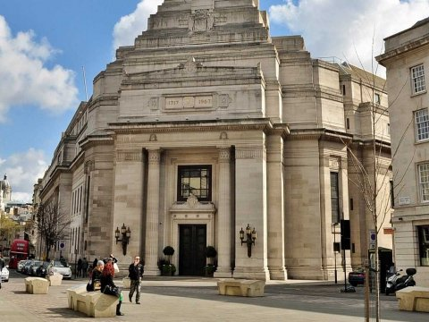
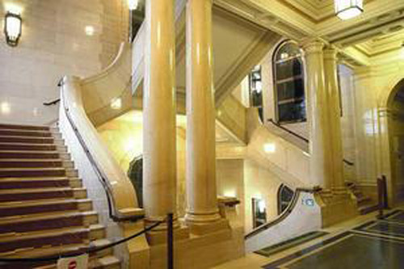
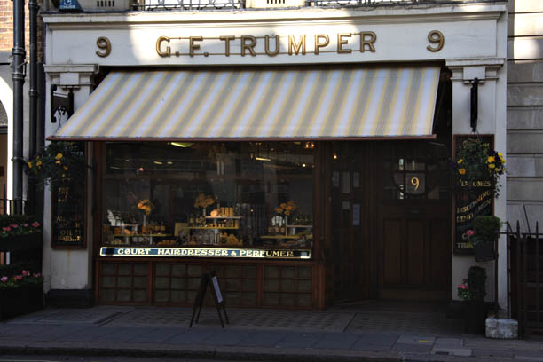
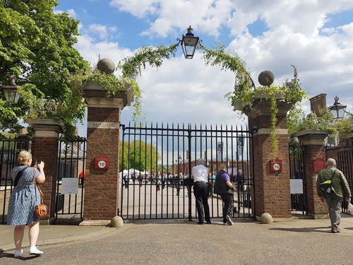
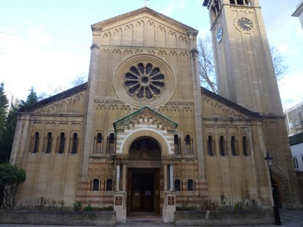

Freemasons' Hall in Covent Garden used as the 'Soviet Embassy'. (Also used in 'The Adventure of the Western Star', 'One, Two, Buckle My Shoe', 'Mrs McGinty's Dead' and 'Murder on the Orient Express').

Interior scene at Freemasons' Hall where Katrina meets Nicholai.

Poirot buys scent at G.F.Trumper at 9 Curzon Street in Mayfair before going to the Chelsea Flower Show.

North entrance to the Chelsea Flower Show on Royal Hospital Road, London SW3.

Katrina visits the Russian Orthodox Church at Ennismore Gardens, London SW7